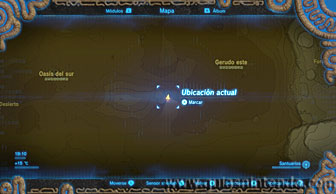
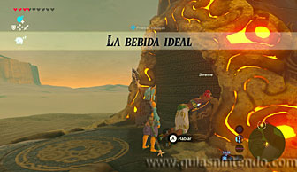
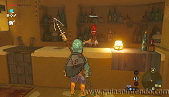
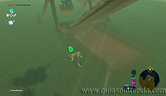
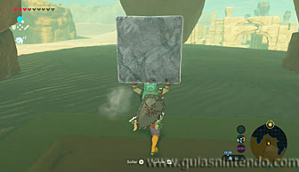
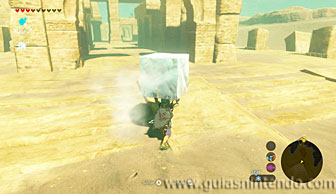
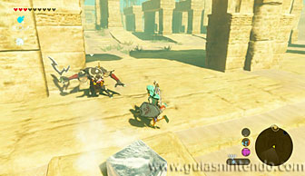
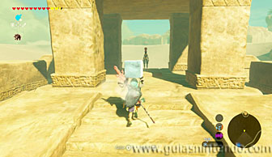
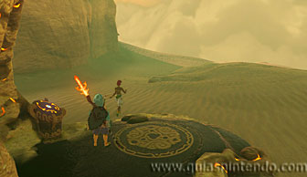
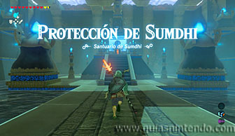

Se encuentra en la región de la torre del cañón, al sureste del Desierto de Gerudo, pero no estará disponible hasta que superes la Prueba heroica "La bebida ideal". Al llegar a la entrada al santuario encontrarás a Sorenne y no te dejará activar el santuario. Para lograr que se mueva debes llevarle una bebida Shiok y Shiak.

Visita a Nesooru en la Ciudadela Gerudo, está en el bar situado al norte detrás de la joyería. Ella te dirá que te entregará la preciada bebida siempre que tú le traigas hielo del almacén. Ahora debes salir de la ciudadela y dirigirte al norte, allí encontrarás unas ruinas y tras ellas el almacén. Puedes entrar por una trampilla que hay en el suelo.

Dentro tendrás que hablar con la encargada para que te deje coger un bloque y esto solo ocurrirá si es de día. Si no lo es, crea una hoguera y duerme hasta el mediodía. Después debes salir del almacén y recorrer las ruinas con el bloque sin perder mucho tiempo ya que el calor lo va derritiendo.

El único problema es que aparecen enemigos durante el camino, puedes intentar esquivarlos alejándote de ellos o dejar el bloque en el suelo un momento para acabar con ellos. Si los derrotas rápidamente te dará tiempo a hacerlo. Al final de las ruinas encuentras esperándote a Nesooru y al llegar a su lado te dará la bebida que necesitas.

Ahora regresa al santuario y al hablar con Sorenne se irá de allí dejando el acceso libre. Entra en el santuario y abre el cofre para conseguir un diamante. Después avanza hasta llegar al altar para conseguir el símbolo de valía.
